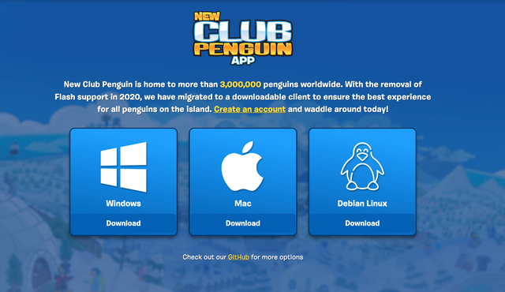

NewCP staat voor New Club Penguin, een vernieuwde versie van Club Penguin. NewCP is gebaseerd op Club Penguin die op 24 oktober 2005 was gelanceerd en op 30 maart 2017 gestopt en offline gehaald. Gelukkig werd op 8 juli 2020 NewCP geopend, hierdoor konden trouwe spelers weer verder spelen. De playerbase van NewCP groeit nu nog steeds. Ik speelde vroeger als kind erg veel online spelletjes, waaronder Club Penguin. In Club Penguin had je memberships die geld kostte en ik wilde die als kind heel erg graag, maar dat mocht nooit. Bij NewCP is dat allemaal gelukkig gratis.
Hoe download je NewCP?
Je moet naar de website www.newcp.net gaan.
In de hoek is er een gele "Play Now" knop. Als je die drukt, komt er een scherm met 3 opties die je kunt kiezen om de app te downloaden op je scherm.

Je klikt degene die je nodig hebt. Dan volg je alle stappen om de app te downloaden.
Account maken
Je hebt de app gedownload, nu kan je je eigen penguin maken.
Servers
Als je bent ingelogd krijg je een scherm met alle servers waar je in kunt. Er zijn in totaal 16 servers die je kunt kiezen. De server die het vaakst, bomvol zit is Blizzard.
De servers met een tekstbubbel naast de vlag, zijn servers waar je niet kan typen. Je kan daar alleen met kant en klare zinnen praten.